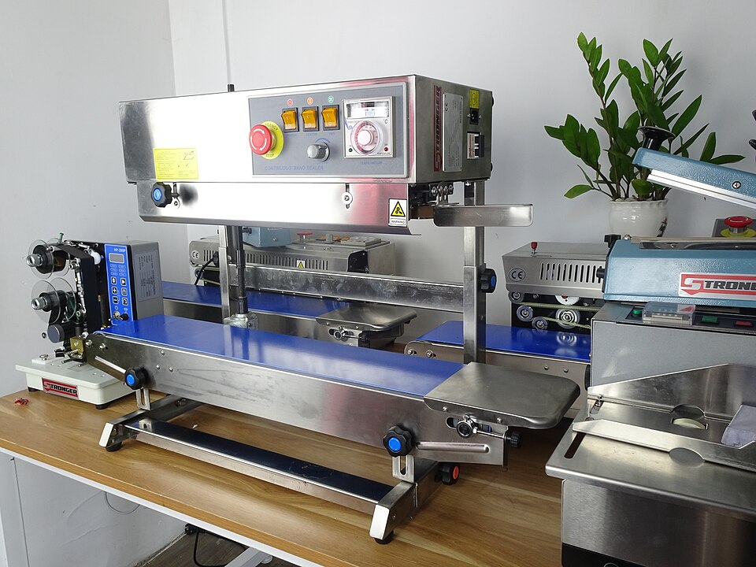
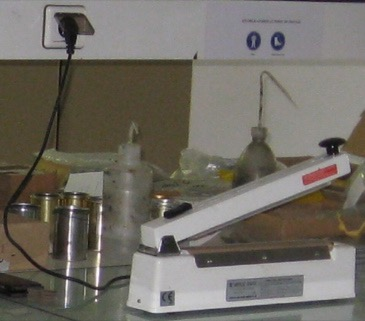

Diagnose a packaging sealer with a weak or uneven seam
Separate pressure, material, dwell time and temperature before ordering a heater or controller.
Recognise a band sealer and an impulse sealer
A bench impulse sealer clamps a stationary bag and briefly powers a heating strip. A continuous band sealer moves a bag between belts, past heating and cooling blocks. Dwell time is the time the seam spends in the heated zone. A carton taper uses tape and has a different fault path. Confirm the machine type before looking for parts.

Photo by M5s, resized with labels added. Original photo · CC BY-SA 4.0.


Photo by Cjp24, resized. Original photo · CC BY-SA 3.0.

Watch a continuous sealer feed a bag · Follow the bag entry, belt run and exit. Pause and identify which adjustment could affect dwell. Sampack continuous band sealer demonstration.
Prove the controller command and load separately on a 5 V model
Make two independent branches across a regulated 5 V trainer supply, each with a switch, 330 Ω resistor and red LED in series. Name the switches COMMAND and LOAD. A partner plays the output circuit by setting LOAD according to the exercise card. The first LED represents the controller asking for heat; the second represents measured current through a load. No heater or mains relay is used.
| What you see | What the model shows | Evidence a technician would need |
|---|---|---|
| Command on, load off | Heat is requested with no heater current. | An open element, blown protection, lost feed or failed switch can give this result. The isolated element and path each need a documented check. |
| Command off, load on | Heat is still being delivered. | Isolate the machine and refer. A shorted switching device is one possibility. A qualified technician tests the independent safety cutout before release. |
| Command and load follow one another | The two observations agree. | Check the sensing accuracy, film compatibility, belt tracking, pressure and actual cycle. The indicators alone do not prove a good seam. |
Diagnose the seam with physical evidence
Collect two labelled scrap pouches, the film type, customer speed and temperature settings and an example of a good seam. Bench-inspect the cold, disconnected machine under its manual. On a band sealer, look for belt wear and contamination. On an impulse machine, look at the removable sealing cover and pressure pad. Stop at any part requiring qualified access.
On an unplugged, cold hand-operated impulse sealer with the manufacturer’s normal jaw-opening mechanism, compare drag on equal paper strips placed at the left, centre and right. Keep hands away from the closing jaw. Uneven pressure on one side is a mechanical clue. It does not independently prove a failed heating strip.
Have the trained operator run the guarded machine on agreed scrap under its service procedure. With the same film, adjust only one documented variable at a time and let conditions settle. Record recurring leak channels, wrinkles or edge weakness at fixed speed. Use the owner’s approved seam test and acceptance criteria for production release. Appearance and a hand pull are workshop screens only.
Common quotes include a clear consumables list, which belt or pad fits the model, how you will prove the repeat seal and whether pickup or site time is included. Ludhiana packaging machine service example · Omron guidance on SSR failure and independent protection.